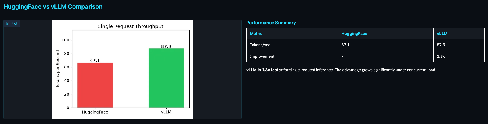
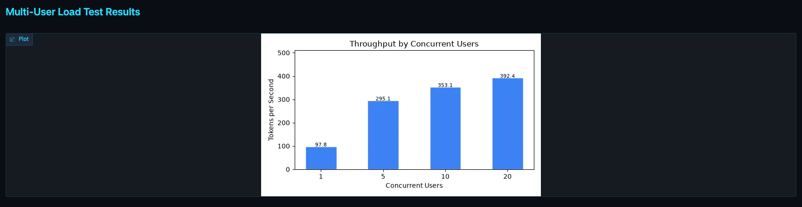

Demo · Task 8


python task_8_dashboard.py
A Gradio app on port 7860 that reads the results every task wrote and polls the live server.
Top panel: the same model served two ways. The gap is the engine, not the weights.
Bottom panel: continuous batching at work. Throughput climbs as users arrive.
Live row: a refresh button sends a real request and reports tokens per second and latency now.
Deploying Custom LLMs with vLLM · PyCon Africa 2026
18